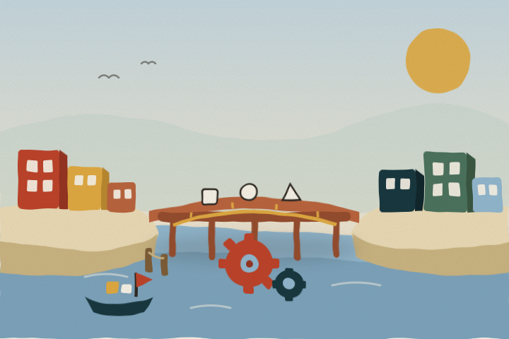
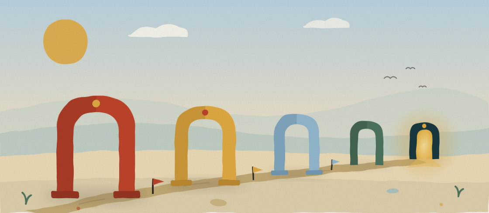

01 Darling
The kernel that isn't. Darling's userspace XNU, ported up to xnu-12377 (the macOS 27 one), answers Mach traps and syscalls so Apple's libsystem never notices it's on Linux.
a personal systems project
DaySetta runs Apple's own macOS 27 userland (WindowServer, AppKit, the daemons) unmodified, on a plain ARM Linux box. Everything below it is faked: a userspace XNU, fake kexts, Metal translated to Vulkan.
what this is
Most macOS-on-Linux attempts rewrite Apple's software. DaySetta goes the other way: it runs Apple's own binaries (WindowServer, SkyLight, AppKit, the launchd daemons) exactly as shipped in the macOS 27 IPSW, and fakes everything below them.
It's the follow-up to Daylight, an older x86 experiment that tried to reimplement WindowServer. That taught the lesson this project is built on: the protocol is the hard part, so let Apple's code speak it.
Apple binaries never live in git. Everything Apple comes from your own IPSW.
how it works
The macOS userland thinks it's on Apple hardware. Each floor below pretends to be the thing the floor above expects.

The kernel that isn't. Darling's userspace XNU, ported up to xnu-12377 (the macOS 27 one), answers Mach traps and syscalls so Apple's libsystem never notices it's on Linux.
There are no kexts here. iokitd answers their user clients instead, so WindowServer thinks it's talking to Apple's paravirtual display and GPU: the same path a macOS VM would see.
The guest's Metal command buffers go to reims-vgpu and get translated to Vulkan. Metal stays 100% Apple's own driver. On a box with no GPU that's llvmpipe, so it's slow.
honest status — nov 2026
No mock-ups here. This is exactly where the project stands, with the log line to prove it.
LoginComplete, ALL desktop agents alive (Dock, MenuBarAgent,
SystemUIServer, WallpaperAgent, WindowManager), 12 frames all
zero — the black is real, not probe damage.Honest guess from the repo: “a usable desktop is still days to weeks out, not hours.”
the road ahead

The composite path works end to end; the scene the guest commits is empty. Next: seed the missing session/wallpaper content so layers commit with real uniforms.
HID is half done: the event plumbing exists, the last dispatch gaps don't. Keys and clicks need to land in AppKit.
Finder, the Dock, the default macOS 27 apps behaving like a daily desktop.
.dmg and .pkg install paths the way macOS does them, then app-by-app work. No app-specific hacks: if an app breaks, fix the general thing underneath.
The long-term vision: a desktop app where you drag a macOS IPSW in, it extracts, and the macOS desktop appears inside that window. Planned, not started. No commitments.
The old from-scratch design docs (VISION, ARCHITECTURE, ROADMAP) describe a dropped plan with no Darling. They're kept in the repo for history; the list above is the live direction.
questions people ask
“is this a VM?”
No. There's no hypervisor and no virtual machine. macOS code runs as ordinary Linux processes on the same kernel; the “hardware” it sees is answered in userspace.
No. Linux stays Linux. DaySetta doesn't boot macOS or replace your OS. It runs the macOS userland (WindowServer, AppKit, daemons) as processes and fakes the kernel and devices below them.
Your own macOS 27 IPSW. No Apple binaries are committed to git; the repo only holds the translation layers and tooling.
Not as a usable desktop, no. Login completes and all the desktop agents run, but composited frames are still black. The status section has the current log line; the repo's own guess is days to weeks, not hours.
An ARM (aarch64) Linux box. The reference host is plain ARMv8.0; macOS 27 is arm64e, so PAC and LSE instructions get emulated. A GPU helps: without one, Vulkan falls back to llvmpipe and it's slow.
Darling is the kernel floor here, not the whole stack. DaySetta adds the display/GPU/input side (iokitd and reims-vgpu) so Apple's real WindowServer and Metal driver can run instead of a reimplemented server.
Later. The goal is running ARM Mac apps first; the ARM build has to mature before an x86_64 path (via an ARM64 emulator) makes sense.
No. It's a personal project, for fun. macOS is a trademark of Apple Inc.